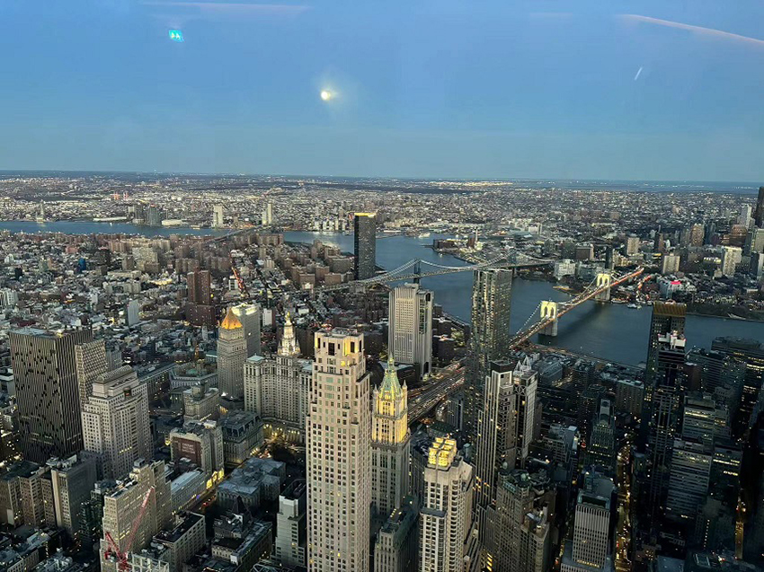

如果問你世界第一大都市在哪裡？我想答案不陌生，那就是紐約。「閃爍的看板、嘈雜的街道、濕熱的地鐵、刺鼻又奇異的味道」是我對紐約的第一印象。以前總是好奇為什麼人們總是對它為此癡迷，今年年初後的我有了答案了。
走在曼哈頓的上城區中央公園裡，三月末的紐約，即使春寒料峭，還是讓人忍不住從屋裡外出欣賞著這美麗的風景。坐在長椅上的我，一邊咀嚼著美式快餐，一邊欣賞著這份只屬於我的自在，思考著有多久沒有這麼愜意的讓自己好好放空了，觀看圍牆外兩旁無法想像的天價豪宅，園內散步的人們卻又顯得格外的從容自在，不管是晨跑運動或騎單車的年輕人，還是在沙灘上嬉鬧的兒童，或是在一旁聊天的媽媽們，都是我嚮往的生活，此時此刻，只需要好好地對自己負責，也在此刻才意識到，原來只有真正的富人才有辦法享有這樣奢侈的「自由」。
|  |
整座紐約市被無數棟的摩天大廈覆蓋，所以有著「曼哈頓懸日」的存在，其中就屬時代廣場跟帝國大廈最為人所知，每年的跨年夜多少民眾齊聚時代廣場，等待那水晶球降落，彩紙漫天，而我認為來到了紐約，唯一一件不可錯過的事就是觀看百老匯表演，不管是栩栩如生「獅子王」、耳熟能詳的「阿拉丁」或是性感懸疑的「芝加哥」歌舞劇，都讓觀眾有不同的聽視覺刺激感受，現場的歌舞讓人感受到紐約多元文化的熱情與魅力。而帝國大廈則是讓人想起「西雅圖夜未眠」最後的會面，或是「北京遇上西雅圖」的等候，讓多少男男女女為此流連。電影中的金剛也是這樣爬上帝國大廈稱霸世界，帝國大廈代表著一個時代的核心權力，古人喜好登高望遠，我亦是如此，望眼看過去，不自覺有著自豪感，但誰也沒想到這樣的驕傲卻在一次恐怖攻擊中瞬間擊滅，墜落的不單是建築的基石，更是長久以來西方社會的信心與驕傲。
即使高物價以及高房價讓城市裡的人們喘不過氣來，但誰也沒有因此而離開，反而更喜愛夜晚的它。傍晚波光粼粼，夕陽映照在海面上，布魯克林大橋彷彿劃開了兩個世界，河岸的那端是這世界中菁英的菁英，聚集了所有金融社會高層中的大人物，就跟慾望城市裡的主角們一樣，買名牌絕不手軟，甚至樂此不疲，每天積極地參加時尚名流晚宴。同時，在另外一側的則是紐約的下城區布魯克林區，夾雜著各式各樣的文化，多元且熱情奔放，路邊的街道跟商品透漏著異國風情。走訪小義大利街道中，沿街的戶外咖啡座跟餐廳，擺放著不同於美國文化的歐洲風情的裝飾，空氣中也瀰漫著義式濃縮咖啡的芳香，綻開的牽牛花似乎也在對我笑。
或許就是因為紐約總是充滿著各種可能性，不管你來自何方，它總能包容著我們，讓我們擁有真實的自我，這也是為什麼人們總是可以一而再，再而三地造訪這個城市。